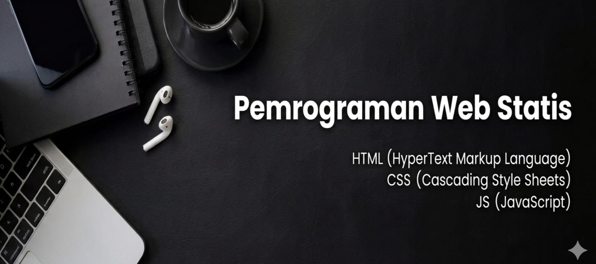

Fahrul Maulana Ludfiansyah(251011750239)Galeri GambarBerikut adalah kumpulan gambar dari materi HTML, CSS, dan JavaScript beserta penjelasannya.
|
 |
||||
| HOME | HTML | CSS | JavaScript | Image |
|---|---|---|---|---|
|
||||
| CopyRight © 2026 - Fahrul Maulana Ludfiansyah (251011750239) |